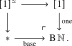
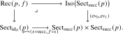
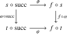
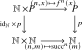
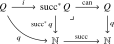
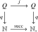
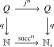

We construct the anima \(\N\) of natural numbers from the free category on one endomorphism, and show that it satisfies dependent recursion and is a set.
Definition 10.2.1 (Natural numbers). We define the category \(\B\N\) as the following pushout in \(\Cat\):

Construction 10.2.2 (Arithmetic operations). Composition in \(\B\N\) defines the addition function \[ +\colon \N \times \N \to \N, \qquad n + m := m \circ n. \] Thus addition is unital and associative, with canonical identifications \[ (n + m) + k = n + (m+k), \qquad 0 + n = n = n + 0. \] The successor function is right addition by the generator: \[ \succ\colon \N \to \N, \qquad \succ(n)=n+1. \] Equivalently, it is the composite \[ \N\iso\N \times \{1\} \to \N \times \N \xrightarrow{+} \N. \]
Lemma 10.2.3 (The free endomorphism). For any category \(C\), there is an equivalence \[ \Map(\B\N,C) \simeq \{f : \Map([1],C) \mid s(f) = t(f)\} \simeq \sum_{x : C^{\simeq}} C(x,x). \]
Proof
This is an immediate consequence of the universal property of the pushout.
Construction 10.2.4. Let \(C\) be a category and let \(\varphi\colon \B\N \to C\) classify an endomorphism \(f\colon x\to x\) in \(C\), so that \(x=\varphi(\base)\) and \(f=\varphi(\one)\). By passing to hom animae, \(\varphi\) induces a morphism \[ \varphi\colon \N = \B\N(\base,\base) \to C(x,x) \] which we will denote by \(n \mapsto f^n\). Since \(\varphi\) preserves identities and composition, we have:
• The endomorphism \(f^0\colon x \to x\) is the identity of \(x\) in \(C\);
• For \(n,m \in \N\), the endomorphism \(f^{n+m}\) agrees with \(f^m\circ f^n\).
We may therefore think of \(f^n\) as the \(n\)-fold iterate of \(f\).
Example 10.2.5. As a special case of Construction 10.2.4, take \(C = \Cat\) to be the category of small categories, and let \(x = P\) be a small category equipped with an endomorphism \(f\colon P \to P\). Then the previous construction provides a map \[ \N \to \Cat(P,P) \simeq \Map(P,P), \qquad n \mapsto f^n. \] Uncurrying this functor, we obtain a functor \(\N \times P \to P, (n,x) \mapsto f^n(x)\).
Remark 10.2.6. Construction 10.2.4 is functorial in \(C\): if \(F\colon C \to D\) is a functor, then the endomorphism \(F(f^n)\colon F(x) \to F(x)\) agrees with \(F(f)^n\colon F(x) \to F(x)\) for every natural number \(n \in \N\).
10.2.1 Dependent recursion for natural numbers
Given categories \(P_n\) and functors \(f_n\colon P_n\to P_{n+1}\) for \(n:\N\), we will show that a recursive section \(x_{n+1} = f_n(x_n)\) is uniquely determined by its value at zero. This holds at the level of categories: evaluation at zero is an equivalence between the category of recursive sections and \(P_0\).
Definition 10.2.7 (Recursive sections). Let \(p\colon P\to\N\) be a functor and let \(f\colon P\to P\) be an endofunctor over the successor function. For a functor \(u\colon\N\to\N\), define the category \[ \operatorname{Sect}_u(p) \coloneqq \Fun(\N,P)\times_{\Fun(\N,\N)}\{u\}, \] where the functor from \(\Fun(\N,P)\) is postcomposition with \(p\). Thus \(\operatorname{Sect}_{\id_{\N}}(p)\) is the category of sections of \(p\), while \(\operatorname{Sect}_{\succ}(p)\) is the category of functors \(g\colon\N\to P\) over \(\succ\).
The category \(\operatorname{Rec}(p,f)\) of recursive sections is
defined by the pullback square
 
Remark 10.2.8. Let \(\tilde{P}\colon \B\N\to \Cat\) be the functor classifying the endomorphism \(f\colon P^\simeq\to P^\simeq\). Similarly, the endomorphism \(\succ\colon\N\to\N\) is classified by the representable functor \(\B\N(\base,-)\colon \B\N\to \An\). The functor \(p\) intertwining \(f\) and \(\succ\) exactly amounts to a map \(\tilde{p}\colon \tilde{P}\to \B\N(\base,-)\) in \(\Fun(\B\N,\An)\). With this translation, the anima \(\operatorname{Rec}(p,f)^\simeq\) of recursive sections can be identified with the anima of (usual) sections of \(p\colon \tilde{P}\to\B\N(\base,-)\) in \(\Fun(\B\N,\An)\). By Yoneda, this anima is equivalent to the anima \(P^\simeq_0\) by evaluation.
We now upgrade the equivalence of Remark 10.2.8 to an equivalence of categories:
Theorem 10.2.9 (Dependent recursion for natural numbers). Let \(p\colon P \to \N\) and \(f\colon P \to P\) be functors equipped with a commutative square Evaluation at zero defines an equivalence \[ \ev_0\colon\operatorname{Rec}(p,f)\iso P_0. \] Consequently, for every object \(x_0:P_0\), the category of recursive sections equipped with an identification \(s(0) = x_0\) is contractible.
Proof
Iterate the given square as an endomorphism of \(p\) in
\(\Fun([1],\Cat)\), using Construction 10.2.4. Uncurrying
gives a commutative square

To construct \(R\ev_0 = \id\), put \(C=\operatorname{Rec}(p,f)\) and let \(U\colon\N\times C\to P\) be the universal section. Write \(K(n,c)=f^n(U(0,c))\) for the section underlying \(R\ev_0\). Their recursive isomorphisms will be denoted by \(\vartheta_U\) and \(\vartheta_K\). Form the pullback where \(\Iso_{\N}(P)=\N\times_{\Iso(\N)}\Iso(P)\) is the relative isomorphism category from Corollary 5.3.15. Thus \(E\) parametrizes isomorphisms \(u\colon K(n,c)\iso U(n,c)\) in \(P_n\). Composition of relative isomorphisms defines an endofunctor \(h\) of \(E\) over \(\succ\times\id_C\) by \[ h(u)=\vartheta_{U,n}^{-1}\circ f(u)\circ\vartheta_{K,n}. \] The identity \(f^0 = \id_P\) gives a functor \(j\colon C\to E\) over \(c\mapsto(0,c)\).
Now iterate the square \(qh = (\succ\times\id_C)q\) in \(\Fun([1],\Cat)\) and evaluate its iterates on \(j\). Since \(\succ^n(0) = n\), this gives a section \[ L\colon\N\times C\to E,\qquad L(n,c)=h^n(j(c)), \] together with an isomorphism \(L\circ(\succ\times\id_C) = h\circ L\) over \(\succ\times\id_C\). Projection to \(\Iso_{\N}(P)\) gives an isomorphism \(\alpha\colon K\iso U\) over \(\N\), and the iteration comparison says \[ \alpha_{n+1}=\vartheta_{U,n}^{-1}\circ f(\alpha_n)\circ\vartheta_{K,n}. \] Equivalently, \(\vartheta_{U,n}\circ\alpha_{n+1}=f(\alpha_n)\circ\vartheta_{K,n}\), which is the square required of a morphism of recursive sections. All these constructions are functorial over \(C\), so \(\alpha\) defines \(R\ev_0 = \id_C\). Hence \(R\) is inverse to \(\ev_0\). The last assertion follows by taking the fiber at \(x_0\).
Remark 10.2.10. Applied to the family \(\N\times C\to\N\) associated with an endomorphism \(g\colon C\to C\), the theorem says that \((\N,0,\succ)\) is the free pointed endomorphism: for every \(x:C\), the category of functors \(u\colon\N\to C\) equipped with identifications \(u(0) = x\) and \(u\circ\succ = g\circ u\) is contractible.
Observation 10.2.11 (Dependent induction). Let \(Q(n)\) be an anima for every \(n : \N\), and let \(q\colon Q\to\N\) be the
corresponding family. A family of maps \(i_n\colon Q(n)\to Q(n+1)\) determines
a commutative diagram
 
Given \(x_0 : Q(0)\), the universal property of \(\B\N\) produces, for every
\(n\in\N\), a commutative diagram

10.2.2 Decidability of the natural numbers
We prove that \(\N\) has decidable equality, so that Hedberg’s theorem applies. First we show that zero is not a successor and that successor is an embedding.
Lemma 10.2.12. For all \(n : \N\) we have \(0 \neq \succ{n}\).
Proof
By recursion, we can construct a function \(f\colon \N \to \An\) with \(f(0):= *\) and \(f(\succ{n}):=\emptyset\). Thus for each \(n : \N\) we get the desired map \(e\colon (0=\succ{n}) \to \emptyset\) defined as \(e(p):=f(p)(*)\), where \(f(p)\colon * \to \emptyset\) is the map induced by the equality \(p:0=\succ{n}\).
Construction 10.2.13 (Positive natural numbers). By Example 10.1.11, the negation \(n\neq 0\) is a proposition for every \(n : \N\). We define the anima of positive natural numbers by \[ \N_{\geq 1} \coloneqq \{n : \N\mid n\neq 0\} \coloneqq \sum_{n : \N}(n\neq 0). \] Thus an object of \(\N_{\geq 1}\) is a pair \((n,e)\) consisting of a natural number \(n\) and a term \(e : n\neq 0\). We write \[ j\coloneqq\pr_1\colon\N_{\geq 1}\hookrightarrow\N \] for the first projection. Its fiber over \(n\) is the proposition \(n\neq 0\), so \(j\) is an embedding.
Lemma 10.2.14. The successor function induces an equivalence \[ s\colon\N\iso\N_{\geq 1}, \qquad n\longmapsto n+1. \]
Proof
By Lemma 10.2.12, every successor is nonzero. Hence \(\succ\) lifts through \(j\) to a function \[ s\colon\N\longrightarrow\N_{\geq 1}. \]
Dependent induction produces, for every \(n : \N\), a function \[ (n\neq 0)\longrightarrow \sum_{m : \N}(\succ(m)=n). \] For \(n=0\), a term of the source contradicts \(\id_0 : 0=0\). For \(n=\succ(m)\), send every term of the source to the pair \((m,\id_{\succ(m)})\). Passing to total animae and projecting to the first component defines a function \[ p\colon\N_{\geq 1}\longrightarrow\N \] together with identifications \[ \succ(p(x))=j(x) \qquad (x : \N_{\geq 1}). \] The successor clause of the construction gives \(ps=\id_{\N}\). The displayed identifications give \(jsp=j\), and since \(j\) is an embedding, they lift uniquely to an identification \(sp=\id_{\N_{\geq 1}}\). Thus \(p\) is inverse to \(s\).
Construction 10.2.15 (Predecessor function). We define the predecessor function \[ \pred\colon\N_{\geq 1}\longrightarrow\N \] to be the inverse of the successor equivalence from Lemma 10.2.14. Thus \[ \pred(s(n))=n \qquad\text{and}\qquad \succ(\pred(x))=j(x) \] for \(n : \N\) and \(x : \N_{\geq 1}\).
Lemma 10.2.16 (Successor is an embedding). The successor function \(\succ\colon\N\to\N\) is an embedding. Equivalently, for all \(n,m : \N\), the induced function \[ (n=m)\longrightarrow(\succ n=\succ m) \] is an equivalence.
Proof
The successor function factors as \[ \N\xrightarrow{s}\N_{\geq 1} \xhookrightarrow{j}\N. \] The first map is an equivalence by Lemma 10.2.14, and the second is an embedding by Construction 10.2.13. Hence their composite is an embedding. The description in terms of identity animae is the fully faithful characterization of embeddings between animae.
Proposition 10.2.17. The anima \(\N\) of natural numbers has decidable equality.
Proof
We need to show that for all \(n,m : \N\) we have \(n=m\) or \(n\neq m\). By double induction on \(n\) and \(m\) it suffices to observe the following:
• We have \(\id_0 : 0=0\).
• We have \(0 \neq \succ m\) and \(\succ n \neq 0\) by Lemma 10.2.12.
• If we assume that \(n=m\) then we also have \(\succ n = \succ m\), and similarly \(n\neq m\) implies \(\succ n \neq \succ m\); both by Lemma 10.2.16.
Corollary 10.2.18. The anima \(\N\) is a set.
Proposition 10.2.19. Denote by \(E\colon \N\times \N \to \Prop\) the observational equality of natural numbers, defined by induction via \begin{equation} E(0,0) \coloneq *, \quad E(0,n+1) \coloneq \emptyset, \quad E(n+1,0) \coloneq \emptyset \quad E(n+1,m+1)\coloneq E(n,m). \tag{10.1}\end{equation} Then for each \(n,m \in N\) we have \begin{equation} (n=m) = E(n,m). \tag{10.2}\end{equation}
Proof
Each \(E(n,m)\) is a proposition by definition, and each \((n=m)\) is a proposition by Corollary 10.2.18. Moreover, the two propositions can be shown to be logically equivalent by induction. The base case is \begin{equation} ! \colon (0=0) \leftrightarrow * : \id_0 \tag{10.3}\end{equation} and the successor steps follow by using Lemma 10.2.12 and Lemma 10.2.16.
Proposition 10.2.20 (Zero-positive decomposition). The function induced by \(0\) and \(j\) is a bijection \[ \{0\}\sqcup\N_{\geq 1}\iso\N. \]
Proof
Let \[ q\colon\{0\}\sqcup\N_{\geq 1}\longrightarrow\N \] be induced by the element \(0\) and the embedding \(j\). By universality of coproducts, its fiber over \(n : \N\) is equivalent to \[ (0=n)\sqcup(n\neq 0). \] Both summands are propositions, and they are disjoint: an identification \(0=n\) and a term \(n\neq 0\) together give a term of the empty anima. Consequently their coproduct is a proposition. It is inhabited by decidable equality for \(\N\), using inversion to identify \(n=0\) with \(0=n\), and is therefore contractible. Since \(q\) is a functor between animae, it is a left fibration. It is thus an equivalence by Proposition 6.1.7.